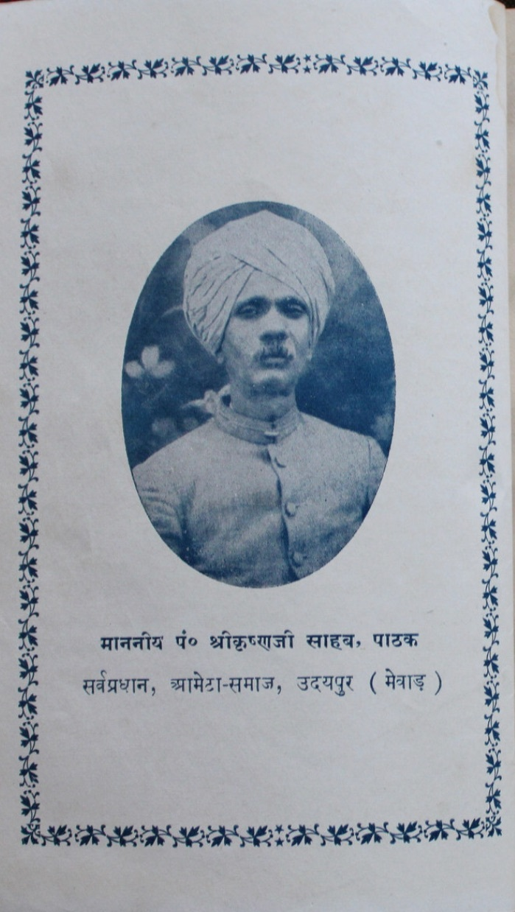
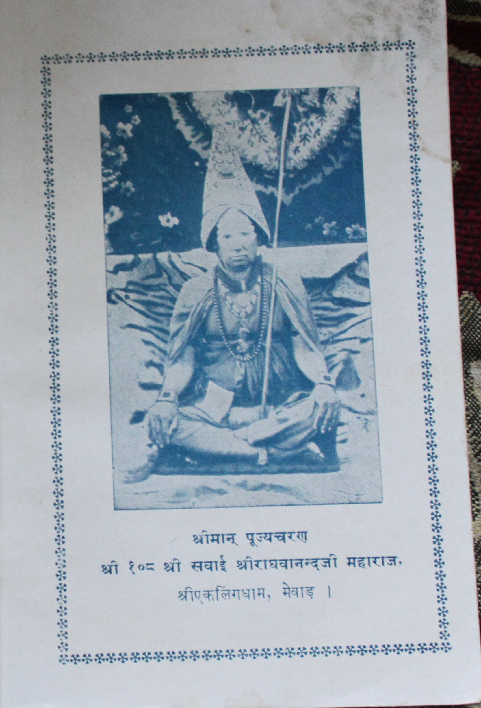
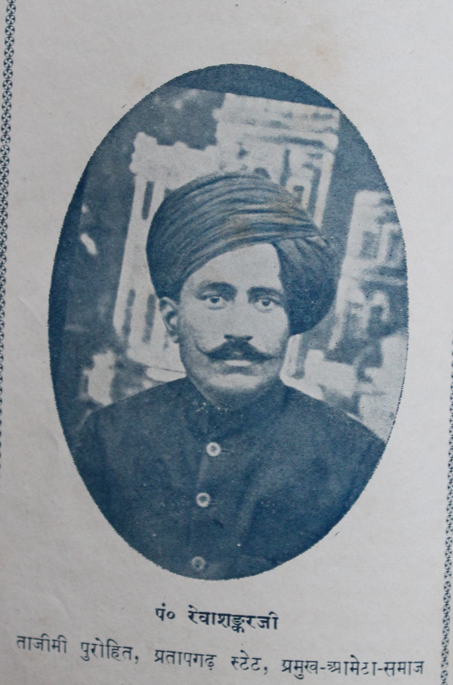

Ameta Sect History
Introduction
Excerpts from Book published in 1945 AD (2001 V.S.) based on 25 years of research. Ameta sect has most families living in four mandals. They are: Mewad, Marwar, Malwa and Jhalawad (as depicted in the figure below). It was stipulated that 1300 families lived in these mandals. Rest 200 families were distributed in various parts of India.
History
Shree Lad (also called lat, lata) Audichya Ameta sect seems to trace its roots to Mulraj Solanki's (~950AD) invitation to brahmin's of North India to come to Gujarat. The word Audichya is refered to "from north India". Lad or lat or lata is the name of south Gujarat region (also called latdesh in various inscriptions found between 200AD-1300AD). It seems that Ameta's are a group of Brahmin's who came from north India to Gujarat to serve King Mulraj, then moved to the lad region. At the end of Solanki dynasty (last king Tribhuvan Pal) in Gujarat (~1244AD), these group of brahmin's left Gujarat and came together in a city called Amet. They decided to take on the name "Shree Lad Audichya Ameta". Most of the history recovered in the 25 years of research in 1945AD is after ~1200AD.
श्रीलाड औदीच्य आमेटा(जातीय इतिहास)
|
.jpg) |
|
विशिष्ठ वंश परिचयआमेटा ब्राह्मण में अनेक धनी मानी विद्वान भाग्यवान पुरुष प्राचीन समय में हुए है, जिनकी निर्मल कीर्ति कई शताब्दियाँ व्ययतीत होने पर, आज भी बड़ी श्रद्धा के साथ पूर्ववृत गायी जा रही है, एवं जिससे आधुनिक जाति बंधुओ को अपनी उन्नति में अग्रसर होने के लिए पर्याप्त प्रोत्साहन मिलता है | अतएव ऐसे पुरुषों के पवित्र चरित्रों का परिचय देना नितांत आवश्यक है | ऐसे पुरुष इस जाति में मेवाड़, मारवाड़, मालवा आदि सभी प्रदेशो में हुए है, परन्तु जाति का सबसे अधिक समूह मेवाड़ में है, इसलिए यहाँ से आरम्भ किया जाता है |
मेवाड़ - मंडल
कश्यप गोत्रीय पाठकसंपूर्ण आमेटा जाति के प्रधान तिलकायत पंडित श्री कृष्णजी पाठक है | आपका निवास उदयपुर में है | आपके पूर्वपुरुष कश्यप गोत्रीय श्री पतिजी पाठक विक्रम सम्वत १३०० के आस पास मेवाड़ में आये | श्री पतिजी के ७ वें वंशधर लष्मीदासजी और इनके पुत्र हरिहरजी वेद, कर्मकांड, तंत्र, दर्शन आदि अनेक विषयो के प्रौढ़ विद्वान् थे एवं सदाचारनिष्ठ तपस्वी पुरुष थे | मेवाड़ के तत्कालीन महाराणा ने सुवर्णमयी काल-पुरुष का दान करना चाहा तब मेवाड़वासी ब्राह्मण डर गए और कोई भी उससे लेने को तैयार नहीं हुआ | अंत में महाराणा ने विवश होकर हरिहरजी से बहुत आग्रह किया तो हरिहरजी ने उसे स्वीकार किया | प्रतिग्रह का दोष दूर करने के लिए हरिहर जी ने छः मास तक अनुष्ठान किया और अनिष्ठां की समाप्ति में "महारुद्र" यज्ञ किया, जिसकी वेदी पाठकजी साहब के मकान के चौक में अभी भी सुरक्षित है | महारुद्र के अवसर पर सभी जाति बंधुओ को निमंत्रित कर २१ दिन पर्यन्त भोजन कराया एवं प्रत्येक को विदा के समय एक एक मुहर दक्षिणा में दी | कालपुरुष दान में मिले हुए ढाई मन सुवर्ण का इस प्रकार हरिहरजी ने सदुपयोग किया | तप एवं त्याग से प्रभावित होकर महाराणाओं ने इस वंश का अच्छा सन्मान किया था | महाराणा राज सिंह जी (१६५२-१६८०) एवं अमरसिंघ जी (१६९८-१७१०) के समय में कई गावों में जागीरें मिलीं, जो अभी भी बहुत अंशों में वर्तमान है | महाराणाओं ने हरिहरजी के वंशधरों को घर पर 'हाथी रखने का ' और गुम्बजदार मकान बनवाने का अधिकार वंश-परंपरा के लिए दिया है | आमेटा जाति ने भी अपने सत्कार के प्रतिफल में हरिहरजी के वंशधरो को सजातीय समाज में उच्च आसान, सर्वप्रथम तिलक, एवं समग्र जाति से सम्बन्ध रखने वाली लिखा-पढ़ी इनके नाम से हो यह सन्मान दिया है, जिसका यथावत परिपालन आज भी हो रहा है | हरिहरजी के ७ वें वंशधर अम्बालालजी पाठक थे, जिनके सुपुत्र वर्त्तमान पाठकजी साहब है, जो बड़े ही सौम्य मिलनसार एवं इंग्लिश-भाषा के अच्छे विद्वान है | |  |
चन्दात्रेय व्यास जोशीचंद्रभागा नदी के पास गांव आगर्या में इस गोत्र के प्रसिद्ध पुरुष नंदजी (नादाजी) व्यास रहते थे, जो बड़े ही कर्मनिष्ठ और विद्वान पुरुष थे | इनके पुत्र कर्ण (कानजी) की कन्या तारादेवी महाराणा लक्ष्यसिंह (लाखासिंह? १३८१-१४२१) के गुरु त्रिलोचन भट्ट को ब्याही गयी थी जिसने गांव कड़ियाँ में एक भव्य विष्णुमंदिर बनवाया था | जब गांव आगर्या दैवी उत्पात में नष्ट हुआ उस अवसर पर तारादेवी अपनी कुशलता से अपने भतीजे शंकर को बचा कर अपने साथ ले आई थी | यह शंकर बड़ा भाग्यशाली पुरुष था | इसने अपनी विद्या से तत्कालीन महाराणा को प्रसन्न किया, जिससे इसके वंशधरो को बहुत वर्षों तक राज्य की ओर से सन्मान मिलता रहा | शंकर के १२ पुत्र थे जिनके वंशधरों के अधिकार में महाराणाओं की ओर से मिले हुए १२ गांव थे | इनमें से करणपुर, कारोल्या, बारां, वीरवास, फलाश्या , फलवा आदि कई गांव आज भी मौजूद है | शंकर ने, अपना असाधारण उपकार करने वाली अपनी बुआ तारादेवी जब सती होने लगी तो उससे, अपने मंगल की प्रार्थना की, जिसके उत्तर में सती ने अपने श्रीहस्त के पूजन का आदेश दिया, जिसका पूजन सभी चंद्रात्रेय आज भी करते है | शंकर ने आगर्या के पास चंद्रभागा नदी को बांध कर एक तालाब बनवाने का प्रारम्भ किया था, जिसकी पूर्ति करने में ही शंकर का जीवन समाप्त हुआ | सरदारगढ़ के पास शंकर के दाहस्थान पर समाधि-मंदिर बना हुआ है, जिसकी पूजा एक नाथ साधू करता है | शंकर के १२ पुत्रों में सबसे बड़ा शिवजी था, जिसके वंशज करनपुर के माफीदार है | शंकर ने अपने जीवन में कई जाति-सेवाएं की थी जिसके प्रतिफल में जाति ने पाठकजी साहब के बाद तिलक एवं दूनी लेणी मिलाने का अधिकार शिवजी के वंशधरो को दिया है , जिसका निर्वाह अभी तक हो रहा है | पंचायती आज्ञा की पाबन्दी कराने का अधिकार भी इनका है| शिवजी के वर्तमान वंशधरो में तिलकायित पंडित नरायणलालजी है एवं पंडित कृष्णलाल व्यास ज्योतिषाचार्य अच्छा विद्वान् है | | शंकर के वंशधरों में जो तीन वेदो का अभ्यास करते थे उनका अवटंक त्रिवेदी और पुराण पढ़ते थे उनका व्यास और ज्योतिष का कार्य करते थे उनका अवटंक जोशी प्रचलित हो गया | वीरवास के त्रिवेदी कहते है कि हम पीपणा गांव से आये है | फ्लाश्या और फलवा के जोशियों की परिस्थिति ठीक है | इनमें भी फ्लाश्या वाले गमेरमल जी ने अच्छी उन्न्नति की है | जागीर की आमदनी की दृष्टि से इनकी समानता करने वाले आमेटा में कुछ ही व्यक्ति होंगे | कारोल्या के माफीदार कल्याणजी जोशी के कुछ वंशधर सलूम्बर में और जयसमुद्र में जा बसे हैं | इनमें पंडित रत्नालालजी ठिकाना सलूम्बर के राज-ज्योतिष थे | आपको अपने गुरु कुबेरदत्त जी से ज्योतिष के साथ २ योग की भी बहुत उत्तम शिक्षा मिली थी, जिसका प्रभाव आपके जीवन में दृष्टिगोचर होता था | आपके छोटे भाई कृष्णदासजी थे जो व्याकरण, साहित्य, वेदांत, ज्योतिष, आदि कई विषयों के अच्छे विद्वान् थे | ये विरक्त होकर बनारस चले गए थे, जहाँ १० वर्ष रहे | अंतिम जीवन के ६ वर्ष प्रतापगढ़ स्टेट के भूतपूर्व महाराजा सर रघुनाथसिंह जी साहब के सी आई इ के (१८९०-१९२९) आश्रय में व्ययतीत किये | अंतिम जीवन में आपने भक्ति-महिमा पंचदशी और प्रतिमा-मंडन ऐसे दो संस्कृत-ग्रन्थ एवं 'मयूरेश-मंदार ' नाम का एक हिंदी कविताबद्ध ग्रन्थ ऐसे तीन ग्रन्थ लिखे, जो अभी अप्रकाशित हैं | रायबहादुर महामहोपाध्याय पंडित गौरीशंकर जी हीरचंदजी ओझाने भी प्रतापगढ़ स्टेट के इतिहास में आपके वैदुष्य की प्रशंसा की है | वर्तमान समय में पंडित रतनलालजी के सुपुत्र पंडित मुकुत्रंजी सलूम्बर ठिकाने के राजज्योतिषी हैं और पंडित कृष्णदासजी के सुपुत्र पंडित जगन्नाथ शास्त्री, काव्यतीर्थ इस समय प्रतापगढ़ स्टेट के राजपंडित हैं | |
वत्स गोत्रीय जोशीविक्रम की १४ वीं शताब्दी में वत्स गोत्रीय जोशी यादवजी अपने परिवार-सहित मेवाड़ आये थे | इनके वंशधर द्वितीय शिवशंकरजी बड़े तपस्वी थे | इन्होने गांव फाचर के पास के वन में कई वर्ष तक दृढ़चित्त रह कर आराधना की, जिससे प्रसन्न होकर भगवान् शंकर ने दर्शन दिया , ऐसा परंपरा से सुना जाता है | इनके आराधना स्थल में भगवान् शंकर की मूर्ति अभी भी विद्यमान है | इनके वंशधर जोशी लक्ष्मीदासजी वेद, दर्शन, तंत्र, पुराण, आदि अनेक विषयों के प्रौढ़ विद्वान थे | इन्होने बनारस जाकर विद्याभ्यास किया था | विक्रम सम्वत १७३२ में महाराणा राजसिंह ने अपने बनवाये हुए राजसमुद्र तालाब की प्रतिष्ठा की , उसमें लक्ष्मीदासजी भी सम्मिलित थे | आपने मंत्रबल से अग्नि प्रकट की एवं अपनी कर्मकांडकुशलता का ऐसा परिचय दिया, जिससे महाराणा बहुत प्रसन्न हुए | महाराणा की कृपा के फलस्वरूप आपको ठिकाना बागोर के लक्ष्मीनारायण के मंदिर में कथाव्यास का पद मिला, जो अभी भी आपके वंशधरों के अधिकार में है | लक्ष्मीदासजी के चतुर्थ वंशधर नृसिंह दासजी नवाणिया से आकर उदयपुर में रहने लगे | नृसिंह दासजी के तृतीया पुत्र शिवलालजी ने महाराणा स्वरुप सिंह (१८१५-१८६१) के समय खेरोदा और बागोर में जागीर प्राप्त की, जो अभी तक आपने वंशधरों के अधिकार में है | शिवलालजी के प्रथम पुत्र पंडित रत्नेश्वर जी थे, जो तत्कालीन विद्वानों में अच्छे प्रतिष्ठित माने जाते थे | कई ब्राह्मण बालकों ने आपसे विद्यालाभ कर अपने जीवन को सुधारा था | बागोर महाराजा के छोटे भाई सोहनसिंघजी की आप पर विशेष श्रद्धा थी | विक्रम सम्वत १६३४ पौष कृष्ण षष्ठी को पंडित रत्नेश्वरजी के सुपुत्र पंडित मोहनलालजी का जन्म हुआ | आपने अपने बाल्यकाल में अपने पिता के समान संस्कृत भाषा की शिक्षा प्राप्त की एवं अपने जीवन के पश्चिम भाग में प्रबल पुरुषों के प्रभाव से आपको ऐसा सौभाग्य प्राप्त हुआ कि जो केवल आपके वंशजों के ही लिए नहीं , किन्तु संपूर्ण आमेटा जाति के लिए गर्व और गौरव की वास्तु है | विक्रम सम्वत १६६५ के वैशाख में आप सन्यास ग्रहण कर हिन्दू - सूर्य महाराणाओं के कुलगुरु महर्षि हारीतराशी के द्वारा प्रतिष्ठापित श्री एकलिंगधाम मेवाड़ के गोस्वामी-पद पर प्रतिष्ठित हो गए हैं | अब आपका पवित्र नाम गोस्वामी श्री १०८ श्री सवाई राघवानंद महाराज है | आपके पूर्वाश्रम की कोई संतति अब अवशिष्ट नहीं है | केवल आपके छोटे भाई वंशीलाल जी के एक सुपुत्र है जिनका नाम पंडित बालकृष्ण जी व्यास है | ये गवर्नमेंट कॉलेज बनारस की साहित्य-शास्त्री परीक्षा उत्तीर्ण हैं एवं साहित्य इतिहास आदि विषयों के अच्छे विद्वान् हैं | आप अब तक दो-तीन संस्कृत ग्रंथों का संपादन प्रकाशन कर चुके हैं जिससे आपकी अच्छी योग्यता प्रमाणित होती है और आजकल आप भोपाल-नोबल्स-स्कूल उदयपुर में हेड पंडित है | उपर्युक्त पंडित नृसिंघदासजी व्यास के ज्येष्ठ पुत्र केशानव-रामजी थे जो मेणार गांव में रहते थे | आपके पंचम वंशधर गंगाधरजी पर मेवाड़ के वैकुंठवासी महाराणा सज्जनसिंह जी के जनक पिता बागोर के महाराजा शक्तिसिंह जी की विशेष कृपा थी | गंगाधरजी का पौत्र और गोवर्धनजी का पुत्र यह गिरधारीलाल है , जिसने इस इतिहास के संपादन की सेवा की है | वत्स जोशियों के कुछ घर ठिकाना कुराबड़ में भी हैं | जिनको मेवाड़ राज्य की ओर से एवं कुछ ठिकाने से भी जागीरें मिली हुए हैं |इनमें ज्योतिषी शिवजी विशेष प्रसिद्द थे , जिन्होंने कई वर्ष तक कुराबड़ ठिकाने का काम किया था | पंडित मोतीरामजी ने अपनी ज्योतिषी विद्या से मेवाड़ के भूतपूर्व प्रसिद्द दीवान मेहता पन्नालालजी को प्रसन्न किया और इन की सहायता से ब्रह्मिणों पर ठिकाना कुराबड़ की और से होने वाली अनुचित कार्यवाइयों का प्रतिकार किया एवं जब्त की हुई भूमि बहाल करवाई | इस वंश के दो प्रसिद्द ज्यौतिषी पंडित भावनीशकरजी और नन्दकिशोरजी अभी कुछ समय पूर्व ही संसार से विदा हुए है | | 
गांव नवनिया के वत्स जोशियों में पंडित बटुकनाथजी प्रसिद्द तांत्रिक थे | इन्होने जबलपुर में जाकर अच्छा सन्मान प्राप्त किया | आजभी आपके वंशधर पंडित बालकृष्ण जी का जबलपुर वाले अच्छा आदर करते है | कुराबड़ के वत्सजोशियों में पंडित गणपतलालजी जोशी अच्छे प्रतिभाशाली विद्वान् है | इन्होने काव्यतीर्थ, वेदान्तशास्त्री, हिन्दीरत्न, आयुर्वेदभिषेक आदि कई परीक्षाएं उत्तीर्ण की है एवं इंग्लिश का भी अच्छा अभ्यास किया है | संस्कृत और हिंदी के गद्य पद्य लिखने में अच्छे कुशल है | वत्स गोत्र में विद्या का प्रचार अच्छा है और भी कई नवयुवक इंग्लिश संस्कृत के विद्वान् है | |
|
कश्यपगोत्रीय जोशीकश्यप गोत्रिय जोशियों में प्रतापगढ़ स्टेट के पुरोहितों का वंश विशेष प्रतिष्ठित है | इसके मूल पुरुष सोजत (मारवाड़) से आकर कुम्भलगढ़ के पास केलवाडे में रहने लगे थे | मुहणोत नैणसी की ख्यात देखने से मालूम होता है कि महाराणा कुम्भकर्ण के पुत्र उदयसिंह ने अपना एक विवाह सोजत में किया था | संभव है वहां के बाईजी के साथ मेवाड़ में इनका आगमन हुआ हो | कांठल राज्य के संस्थापक सूरजमल के पिता क्षेमसिंह की उक्त उदयसिंह के साथ अच्छी मित्रता थी , इससे इनका सम्बन्ध प्रतापगढ़ राज्य से जुड़ गया हो ऐसा अनुमान है | वृद्ध -परंपरा से सुना जाता है कि विक्रम की १७ वी शताब्दी के प्रारम्भ में महरावत विक्रमसिंह जी बड़ी सादड़ी की जागीर का त्याग कर कांठल में आये, उस समय उनके साथ इस पुरोहित वंश के मूल पुरुष कीकाजी उर्फ कृष्णजी साथ आये थे | बाद में इनके और भी कुटुम्बी कांठल में आकर रहने लगे | महरावत विक्रमसिंहजी की बाँसवाड़े के रावत प्रतापसिंह के साथ अच्छी मित्रता थी | इस प्रसंग से कृष्णजी के वंशधरों का बांसवाड़ा राज्य में भी प्रवेश हो गया था | कृष्णजी के वंशधर गोपीनाथजी को प्रतापसिंहजी के ५ वे वंशधर रावल समरसिंह ने अपने पिता उदयभाण के श्राद्ध के अवसर पर भूमिदान दिया था | महरावत भानुसिंहजी ने कृष्णजी के वंशधर श्रीकण्ठजी जोशी को गांव सेमली दान दिया जो अभी तक इनके वंशधरो के पास मौजूद है | इसके बाद महरावत प्रतापसिंह ने गांव मोभाखेड़ी कृष्णजी के वंशधरों को दिया | इन दो गांवो के सिवा और भी छोटी छोटी कई कृष्णजी के वंशधरो को मिल चुकी है और अभी ये अच्छी परिस्तिथि में हैं | इस वंश के मुखिया पंडित रेवाशंकरजी जोशी है, जिनको प्रतापगढ़ स्टेट के वैकुंठवासी नरेश महरावत रघुनाथसिंहजी साहब बहादुर के. सी. आई. ई. ने ताजीम का सन्मान दिया था जो अभी तक पूर्ववृत है | राज -सन्मान में आपकी समानता रखने वाले आमेटा में दूसरे सुने नहीं गए है | इनके पूर्वपुरुष रघुरामजी की धर्मपत्नी ने वि. सम्वत १८४० के फाल्गुन में एक - जाति सम्मलेन किया था | इस अवसर पर सभी जाति बंधू १० दिन तक इनके मेहमान रहे और सभी को एक-एक रूपया दक्षिणा दी गयी | जाति बंधुओ ने प्रसन्न हो कर आपके वंशधरों को सर्वप्रथम तिलक, आसान, और 'दुगुनी लेनी' का सन्मान दिया है | आपके पूर्वपुरुष जोशी हरजी ने महरावत हरिसिंह के समय भगवान् सत्यनाथ का मंदिर बनवाया है, जो देवगढ़ के सूरजपोल के पास अब भी वर्तमान है | |  |
गौतम गोत्रीय भट्टगौतम गोत्रीय भट्टों में भैंसरोड़गढ़ वालों की परिस्तिथि अच्छी है | वि. सम्वत १६५० में महाराज भानुसिंह शक्तावत ने भैंसरोड़गढ़ से आकर भींडर बसाई, उस समय अपने साथ भैंसरोड़गढ़ से गौतमगोत्रीय धनेश्वर भट्ट को लाया | धनेश्वर भट्ट के पुत्र श्रीराम ने माफ़ी जागीर पाई, जो अभी उसके वंशधरों के अधिकार में है | श्रीराम के पुत्र हरजी मनोहरजी ने भींडर में गंभीरसागर तालाब की पाल पर महादेव का मंदिर बनवाया जो आज भी मौजूद है | इस मंदिर की प्रतिष्ठा के अवसर पर महारुद्रयाग और जाति-सम्मेलन किया था | आज भी भींडर में इनके वंशधरों के प्रथम तिलक होता है | गौतमगोत्रीय भट्टों के कुछ घर पहले देवलिया में भी थे | इनका महरावत हरिसिंहजी के दरबार में अच्छा सन्मान था | मन्नाजी भट्ट ने बावड़ी और महादेव मंदिर बनवाया था जो अभी जीर्ण अवस्था में वर्तमान हैं | मन्नाजी भट्ट और इसके वंशधर सोमजी जयशंकर आदि प्रौढ़ विद्वान् थे | इनके लिखे हुए शास्त्रदीपिका, कुण्डप्रदीप आदि अनेक ग्रन्थ महेताओं के प्रसिद्द संग्रह में हैं | इनका विशेष परिचय प्रतापगढ़ स्टेट से प्रकाशित ओझाजी कृत इतिहास, प्रतापप्रशति आदि ग्रंथों से उपलब्ध होता है | इनका वंश अब देवलिया में नहीं रहा | गौतमीया भट्टों में भींडर वाले पंडित नाथूलाल जी गणित - ज्योतिष के अच्छे विद्वान है एवं वयोवृद्ध हैं| गांव तीतरड़ी के गौतमगोत्रीयों का अवटंक उपाध्याय है | महाराणाओं की ओर से विक्रम की १६ शताब्दी में इनको जागीर मिली | २० वीं शताब्दी के प्रारम्भ में गंगारामजी ने विष्णु मंदिर गांव तीतरड़ी में बनवाया और प्रतिष्ठा के समय जाति सम्मेलन किया था | |
भारद्वाजीय भट्ट द्विवेदीभारद्वाजीय भट्टों में महाराणा लाखासिंह ( लाक्षासिंह, १३८२-१४२१ ऐ. डी.) का गुरु त्रिलोचन भट्ट व्याकरण, वेद, कर्मकांड, तंत्र आदि अनेक विषयों का अच्छा विद्वान और सिद्ध पुरुष था | इसकी योग्यता से प्रभावित होकर महाराणा लाखासिंह ने गदोली और बाजवियां ये दो गांव भेट किये जो अभी तक इसके वंशधरों के अधिकार में हैं | महाराणा लाखासिंह के पुत्र महाराणा मोकल (१४०९-१४३३ ऐ. डी.) ने भी इसका सन्मान पूर्ववृत ही रक्खा एवं कड़ियां गांव और भेट किया | कड़ियां गांव में त्रिलोचन भट्ट का एक शिलालेख है, जिसमें उसके पितामह का नाम सीहड़ और पिता का नाम राम लिखा है | त्रिलोचन भट्ट ने एक मंदिर बनवा कर उसमें अपनी इष्टदेवी विंध्यवासिनी की प्रतिष्ठा की थी | जो अभी वडवासन माता के नाम से प्रसिद्ध है | भट्ट्जी का विवाह कर्णपुर वालों के पूर्वपुरुष कर्ण व्यास (कानजी) की पुत्री तारादेवी से हुआ था जो परम वैष्णवी थी | इसने भगवान् चतुर्भुजनाथ का मंदिर बनवाया था और मंदिर की प्रतिष्ठा में बृहत जाति-सम्मलेन किया था | भटटजी ने कड़ियां गांव में एक विशाल तालाव बनवाया था, जो अभी भी भटेला नाम से प्रसिद्द है | भटटजी के वंशधरों की इस समय परिस्तिथि अच्छी है एवं मंदिरों का पूजा प्रबंध भी इनके ही अधिकार में हैं | इनमें पंडित हिम्मतरामजी विशेष व्यवहार दक्ष हैं | पंचायती फैसलों में आपकी राय महत्त्वपूर्ण होती है | पंडित परशुरामजी, उदयपुर, भी अच्छे साहित्य प्रेमी हैं | वृद्ध होते हुए भी नवीन विचारों का स्वागत करते हैं | भटटजी के कुछ वंशधरों ने भिंडर और भादसोड़ा में जाकर जागीरें प्राप्त की एवं आज अच्छी परिस्तिथि में है | परिस्तिथि सुधारने का श्रेय गोबिंदरामजी चतुर्भुजजी एवं गोवर्धनजी को विशेष मिला | ठिकाना भींडर में कथा-व्यास का पद गोविंदरामजी ने प्राप्त किया | पंडित चतुर्भुजजी भट्ट ज्यौतिष के प्रौढ़ विद्वान कर्मनिष्ठ एवं उद्दार पुरुष थे | जोधणास के जागीरदार भी त्रिलोचन भट्ट जी के ही वंशधर हैं | भरद्वाजीय द्विवेदियों में देवलिया - प्रतापगढ़ के द्विवेदी आज भी अच्छी परिस्तिथि में हैं | सभी जागीरदार हैं| राज्य ज्यौतिषी का कार्य बहुत वर्षों से द्विवेदी ही कर रहे हैं | लोहारिया (बागड़ ) के द्विवेदियों में ज्यौतिष के कई अच्छे विद्वान हुए हैं | इनके पूर्वपुरुष परमानंदजी अच्छे योगी थे जिन्होंने अंत में समाधिमग्न होकर शरीर त्याग किया था | वनकोडा के द्विवेदियों में पंडित मौजीरामजी और पन्नालालजी अच्छे गणित्यज्ञ ज्यौतिषी थे, जो कभी सलूम्बर और कभी वनकोडा में रहते थे | |
कौणिडन्य त्रिवेदीकौणिडन्य त्रिवेदियों में धारता वाले माफीदार हैं और परिस्तिथि कुछ ढीक है | उदयपुर के कौणिडन्यों में जयशंकर जी के वंश ने अच्छी उन्नति की | आपके दोनों सुपुत्र पंडित रतनलालजी और रामचन्द्रजी प्रतिष्ठित राजकर्मचारी हैं एवं जाति बंधुओं की सहायता करने में सदा तत्पर रहते हैं | दोनों ही सदाचारनिष्ठ एवं हिंदी साहित्य के पूर्ण अनुरागी विद्वान हैं | पंडित रतनलालजी के सुपुत्र पंडित जगदीशचंद्रजी, आमेटा - जाति में सर्वप्रथम बी. ऐ. एल. एल. बी. हैं | आप इस समय जिले के नायब हाकिम हैं | |